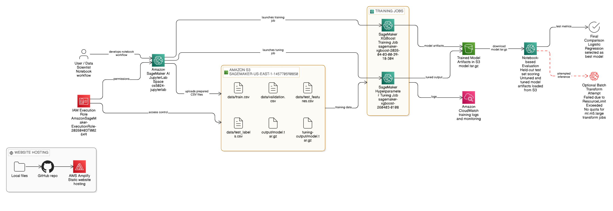
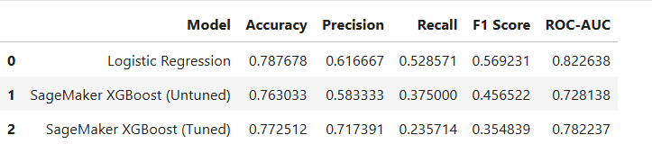
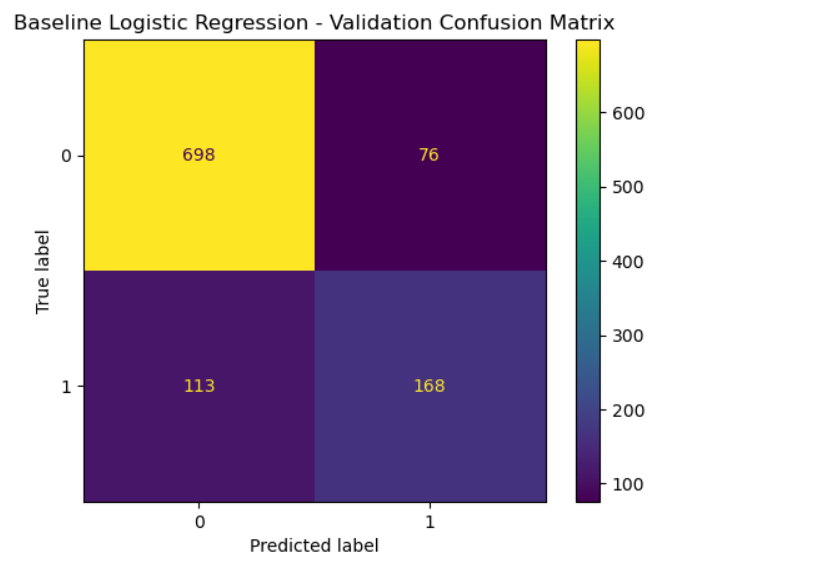

Customer Churn Prediction using Amazon SageMaker
This project implements an end-to-end machine learning workflow on AWS for telecom customer churn prediction. The solution combines preprocessing, baseline modelling, managed XGBoost training in SageMaker, hyperparameter tuning, artifact-based evaluation, and a public project site delivered through GitHub and AWS Amplify.
The project is deliberately honest: the cloud pipeline succeeded, but the strongest overall model on the held-out test set remained Logistic Regression. That makes the work more credible, not less.
Quick Project Facts
Final usable rows after cleaning
Encoded feature columns
Best ROC-AUC (Logistic Regression)
Models benchmarked
Logistic Regression was retained as the best overall model because it produced the strongest balance of recall, F1 score, and ROC-AUC.
AWS Architecture
The ML workflow used Amazon SageMaker AI JupyterLab for experimentation, Amazon S3 for storage, managed SageMaker XGBoost training and tuning jobs, CloudWatch for job logs, and IAM for access control. In a separate delivery layer, GitHub and AWS Amplify were used to publish this project website.
Prepare data in SageMaker notebook
Load the churn dataset, clean TotalCharges, remove identifiers, encode categorical variables, and split the data into train, validation, and test sets.
Upload prepared CSV files to Amazon S3
Store train, validation, and test artifacts in S3 so that managed SageMaker jobs can consume them and write model outputs back to the same storage layer.
Train and tune XGBoost in SageMaker
Launch built-in XGBoost training and hyperparameter tuning jobs, monitor logs with CloudWatch, and store trained artifacts in S3.
Evaluate artifacts and compare models
Load model artifacts back into the notebook, score the held-out test set, and compare cloud-trained models against the baseline Logistic Regression model.
Architecture diagram

SageMaker notebook workflow, S3 uploads, XGBoost training, hyperparameter tuning, artifact retrieval, CloudWatch logging, GitHub version control, and Amplify deployment.
Batch Transform could not be completed because the account had no quota available for ml.m5.large transform jobs.
Interactive Model Lab
Switch between the three evaluated models to inspect the final test-set metrics. This turns the project from a static screenshot dump into a more transparent technical showcase.
This baseline model produced the strongest balance between recall, F1 score, and ROC-AUC. For churn prediction, that balance is more meaningful than chasing a single metric in isolation.
The SageMaker training workflow worked correctly, but the untuned XGBoost model underperformed the simpler Logistic Regression baseline on the held-out test set.
Tuning improved precision and ROC-AUC relative to untuned XGBoost, but recall dropped sharply. That trade-off made it weaker for a churn-retention use case.
| Model | Accuracy | Precision | Recall | F1 Score | ROC-AUC |
|---|---|---|---|---|---|
| Logistic Regression | 0.787678 | 0.616667 | 0.528571 | 0.569231 | 0.822638 |
| SageMaker XGBoost (Untuned) | 0.763033 | 0.583333 | 0.375000 | 0.456522 | 0.728138 |
| SageMaker XGBoost (Tuned) | 0.772512 | 0.717391 | 0.235714 | 0.354839 | 0.782237 |
Project Visuals
These visuals are taken directly from the final project outputs and documentation assets.


Portfolio Value
This project now reads like a proper cloud portfolio item rather than a notebook hidden on a laptop.
Interactive Churn Pattern Simulator
This is an educational front-end simulator based on the project’s observed churn patterns. It is not a live SageMaker inference endpoint. It exists to make the project interactive without pretending that a production prediction API was deployed.
Project links
Live deployment
Amplify URL:
https://main.d3cjze9lxmqc4u.amplifyapp.com/
Static site hosted on AWS Amplify. ML training and evaluation were performed separately in SageMaker.
Professional positioning
This project demonstrates cloud ML workflow design, model benchmarking, documentation discipline, public delivery through GitHub, and AWS-hosted presentation through Amplify.